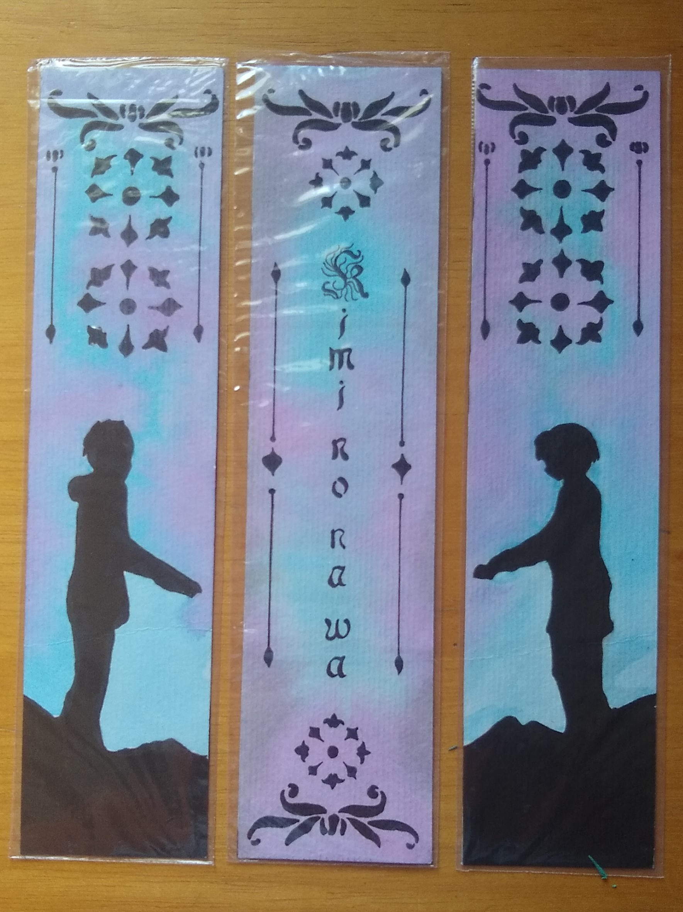

Para este projeto, foi necessário desenvolver três marcadores artesanais inspirados no movimento Arts & Crafts e em uma história infantil. A escolha recaiu sobre a animação japonesa Kimi no Na wa (Your Name), e foi baseada em um dos principais cenários do filme. Cada marcador foi trabalhado com tipografia, ilustração e ornamentação, e a estética foi cuidadosamente trabalhada para criar um resultado final encantador.
Para meu trabalho, me baseei na vida e obra da ilustradora escocesa Jessie Marion King, que é conhecida por seus livros infantis ilustrados e por ter projetado jóias, tecidos e pintado cerâmica. Ela foi uma das artistas do movimento Glasgow Girls e seus primeiros trabalhos foram ilustrações para capas de livros publicados pela Globus Verlag, Berlim entre 1899 e 1902. A editora pediu que ela projetasse uma série de itens no estilo escocês e seus desenhos foram muito elogiados, sendo considerados alguns dos melhores da época.
